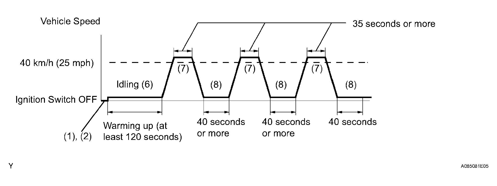

Confirmation Driving Pattern

Courtesy of © TOYOTA, LICENSE AGREEMENT TMS1002HINT:
This confirmation driving pattern is used in the "PERFORM CONFIRMATION DRIVING PATTERN" procedure of the following diagnostic troubleshooting procedure.
- Connect the intelligent tester to the DLC3.
- Turn the ignition switch ON and turn the tester ON.
- Clear DTCs (see DTC CHECK / CLEAR ).
- If using the intelligent tester, switch the ECM from normal mode to check mode (see CHECK MODE PROCEDURE ).
- Start the engine.
- Allow the engine to idle until the engine coolant temperature reaches 75°C (167°F).
- Drive the vehicle at an engine speed of more than 40 km/h (25 mph) for 35 seconds or more.
- Allow the engine to idle for 40 seconds or more.
- Repeat steps (6) and (7) described above at least 3 times.
- Allow the engine to idle for 40 seconds or more.
HINT:
When using the intelligent tester: The MIL will be illuminated during step (10) if a malfunction still exists.
CAUTION:
If the conditions in this test are not strictly followed, malfunctions may not be detected.